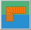
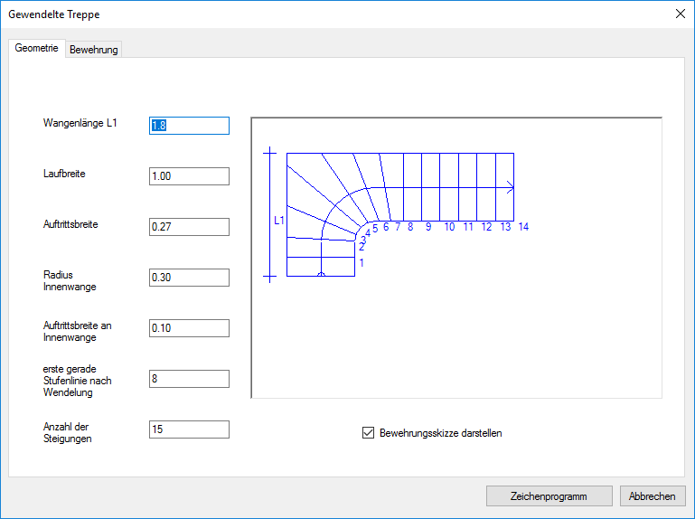
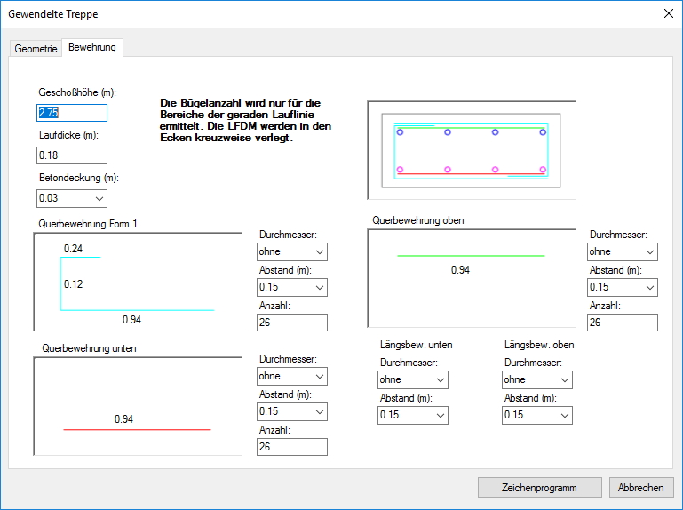

")

 |
Konfiguration eines ¼-gewendelten Treppenverlaufes. |
 |
 |
Registerkarte Geometrie
Die variablen Werte sind gegenseitig voneinander abhängig. Wenn ein Wert geändert wird, passt sich die Geometrie der Treppe sofort diesen Änderungen an.
Wangenlänge L1
Angabe der Länge der ersten Wange. Der Wert muss größer sein als die Summe von Laufbreite und Radius der Innenwange!
Laufbreite
Angabe der Breite des Treppenlaufs.
Auftrittsbreite
Angabe der Breite des Auftritts.
Radius Innenwange
Angabe des Radius, mit dem die Innenwange ausgerundet werden soll.
Auftrittsbreite an Innenwange
Mit diesem Wert wird die Verziehung variiert. Dies wirkt sich zusammen mit der Nummer der ersten geraden Stufe nach der Verziehung aus.
Erste gerade Stufenlinie nach Wendelung
Durch Veränderung dieses Wertes wird die Verziehung optimiert.
Anzahl der Steigungen
Angabe der Stufenanzahl.
Registerkarte Bewehrung
Im Kreuzungsbereich der Längsbewehrung wird keine Querbewehrung berücksichtigt.
Die einzelnen Bewehrungsformen werden verschieden farbig dargestellt, damit Sie in der Querschnittsanzeige erkennen können, wo die Form liegt.
Geschosshöhe (m)
Angabe der Geschosshöhe.
Laufdicke (m)
Angabe der Dicke der Bodenplatte.
Betondeckung (m)
Vorschlagswert aus den Systemdaten. [Option | SysDat | Formstahl | Positionierung → Vorschlag Betondeckung (cm)]
Querbewehrung Form 1 / Querbewehrung oben / Querbewehrung unten
Querbewehrung Form 1 kann alternativ zu den Formen Querbewehrung unten bzw. Querbewehrung oben verwendet werden. Für die nicht gewünschte Form wählen Sie unter Durchmesser "ohne" oder geben Sie den Wert 0 ein.
Durchmesser
Angabe des Durchmessers.
Abstand (m)
Angabe des Abstandes. Wenn Sie die Eingabe über die Tastatur vornehmen, geht es mit der Eingabe der Teillängen weiter.
Anzahl
Wenn Sie das Feld anklicken, wird die Anzahl dem Abstand angepasst. Sie können die Anzahl direkt angeben.
Wenn Sie die Teillängen ändern möchten, klicken Sie das Eingabefeld für die Teillänge an.
Längsbew. unten / Längsbew. oben
Angabe der Längsbewehrungen. Für die nicht gewünschte Form wählen Sie unter Durchmesser "ohne" oder geben Sie den Wert 0 ein.
Durchmesser
Angabe in Millimeter.
Abstand (m)
Angabe des Abstandes. Wenn Sie die Eingabe über die Tastatur vornehmen, geht es mit der Eingabe der Teillängen weiter.